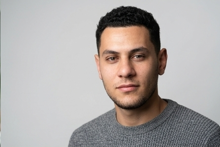

WordPress Delivery With Real Technical Growth
Building modern WordPress websites with sharper execution, stronger systems thinking, and long-term value.
I help businesses launch polished, conversion-focused WordPress experiences with clean front-end execution, dependable back-end work, and a serious growth path into Linux, cloud, infrastructure, and performance optimization.
Available for freelance and contract work
Based in Egypt

Current focus
Full Stack WordPress Developer
Shipping premium websites now while growing into cloud, DevOps, Linux, and infrastructure with intent.
Primary stack
WordPress, WooCommerce, PHP, MySQL, JavaScript
Growth track
Linux, hosting, VPS, Cloudflare, Docker, CI/CD
Project quality signal
Clean delivery, premium feel, serious technical momentum.
Why this matters
- Businesses get polished delivery today, not vague promises.
- You work with a developer who is increasing his technical ceiling fast.
- The result is stronger execution now and better systems thinking over time.
About Me
Not a generic freelancer profile. A serious builder with a clear technical direction.
I build WordPress websites that are meant to perform in the real world: fast, clean, conversion-aware, and built with respect for both business goals and user experience.
How I work
My background is in full stack WordPress development, where I handle design implementation, theme work, WooCommerce builds, integrations, performance tuning, and day-to-day problem solving across production websites.
I care about more than getting a website online. I care about structure, polish, speed, clarity, and whether the final product actually feels trustworthy to the client and the customer using it.
I am also deliberately growing beyond WordPress alone. I study Linux, hosting environments, cloud fundamentals, DevOps workflows, infrastructure, and performance optimization because I want to solve bigger technical problems over time, not stay boxed into a single tool.
Mindset
Ambitious, disciplined, and still accelerating.
I do not position myself as an all-knowing expert in cloud or DevOps yet. I position myself as someone building real delivery experience now while expanding into those areas with seriousness.
Professional strengths
- Strong WordPress and WooCommerce execution
- Clean front-end implementation and UI attention
- Reliable communication and ownership
- Performance-minded technical decision making
Experience
Practical work, real launches, and a professional trajectory that is moving upward fast.
My experience is hands-on and production-based. Instead of inflated titles, I focus on actual delivery, problem solving, and the quality of what goes live.
Project footprint
Live WordPress work across multiple business models
I have worked on education platforms, ecommerce stores, construction company websites, and transport service platforms, adapting the build to each business goal.
What I handle
Front end, back end, WordPress systems, and support
My work includes theme setup, custom implementation, WooCommerce configuration, content architecture, integrations, optimization, and production fixes.
Career direction
Growing from WordPress delivery into infrastructure depth
The next layer of my growth is intentional: Linux, VPS environments, Cloudflare, cloud fundamentals, CI/CD thinking, Docker, and better operational control.
Industries served
Education, ecommerce, construction, logistics, and service-based businesses.
Selected Projects
Case studies that show execution, not just screenshots.
Each project below highlights the business context, the technical role I played, the stack involved, and the measurable outcome or operational improvement delivered.

Learning Platform
WordPress + LMS
Huda Arabic
A focused learning platform for non-native Arabic learners that needed a strong user journey and reliable course delivery.
Client type
Education and language learning business
Goal
Create a premium digital learning environment with smoother engagement and better course access.
My role
Full stack development, custom implementation, LMS integration, front-end structure.
Technologies
WordPress, LMS tooling, PHP, MySQL, JavaScript, CSS
Results
Improved user engagement and a more seamless course delivery experience for learners.

Ecommerce
WooCommerce
Deer Books
An online bookstore built to support physical and digital products while keeping the buying experience simple and trustworthy.
Client type
Book retailer with hybrid product sales
Goal
Build an ecommerce platform that handles multiple product types without sacrificing usability.
My role
WooCommerce setup, payment flow support, custom product configuration, implementation polish.
Technologies
WordPress, WooCommerce, PHP, MySQL, front-end customization
Results
Stronger online sales flow and a cleaner purchase experience backed by easier store management.

Business Website
Lead Generation
Tabarak Constructions
A more credible digital presence for a construction company that needed stronger trust signals and better lead capture.
Client type
Construction and contracting business
Goal
Present the brand professionally and create a site structure that supports inquiries from qualified clients.
My role
Theme development, front-end implementation, contact flow optimization, SEO-oriented setup.
Technologies
WordPress, custom theme work, forms, SEO tooling, CSS, JavaScript
Results
Improved credibility, stronger lead-generation readiness, and a clearer brand presentation.

Transport Platform
Service Booking
Y-Alouf Transport
A transportation platform built to make service discovery and booking feel more structured, modern, and easier to manage.
Client type
Transport and logistics service provider
Goal
Support a smarter booking process and reduce friction in client inquiries and service selection.
My role
Platform implementation, API-related work, booking system setup, front-end experience refinement.
Technologies
WordPress, booking workflows, API integration, PHP, JavaScript
Results
Better automation in the booking journey and a more efficient service inquiry process.

Children's Ecommerce
WooCommerce
Tofulah Books
A children-focused ecommerce experience designed to combine educational value with a clean shopping journey for parents.
Client type
Educational children's bookstore
Goal
Create a more engaging online store that supports discovery, trust, and easier product browsing.
My role
Store design support, user experience optimization, ecommerce configuration, content structure.
Technologies
WordPress, WooCommerce, CSS, product architecture, UX refinement
Results
A more polished shopping experience with stronger educational positioning and better usability.
Skills
A clear stack today, plus a disciplined growth path into deeper technical territory.
This is the skill map I want clients and employers to see clearly: what I already use with confidence, what I actively work with in WordPress delivery, and what I am learning with honesty.
Frontend
Interfaces that feel clean, responsive, and premium
Backend
Core development logic and site functionality
WordPress
Production-ready WordPress build and support work
Infrastructure
Operational awareness beyond the page builder layer
Growth Path
Learning now, building depth deliberately
Why Hire Me
More strategic than a template-only freelancer. More grounded than empty personal branding.
The value I bring is not just WordPress familiarity. It is the combination of serious execution, clean visual judgment, technical curiosity, and the mindset to keep raising the ceiling.
I care about the final product, not just finishing tasks.
Many freelancers stop at functional. I push for a result that feels professional, loads cleanly, and communicates trust immediately.
I combine WordPress practicality with broader technical ambition.
That means you get someone who can execute WordPress work now while thinking more deeply about hosting, performance, tooling, and system quality.
I am easier to trust because I do not fake what I have not mastered yet.
I present my growth areas honestly, which tends to matter a lot when clients need clarity, ownership, and realistic communication.
I build with business intent.
Better structure, better clarity, better conversion flow, and better credibility are part of the job, not extras added later.
Contact
If you need a WordPress developer who delivers clean work now and keeps growing technically, let's talk.
I am a strong fit for businesses that want modern presentation, dependable execution, better website quality, and a developer who takes long-term technical growth seriously.
Best fit
Brands that want a premium website, a more serious technical partner, and clear communication from the first conversation.